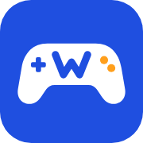
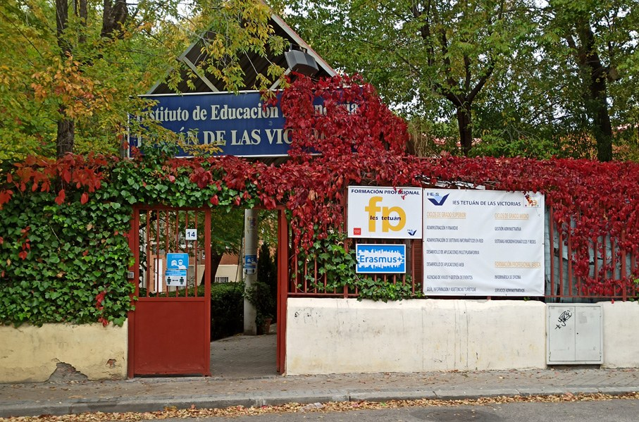
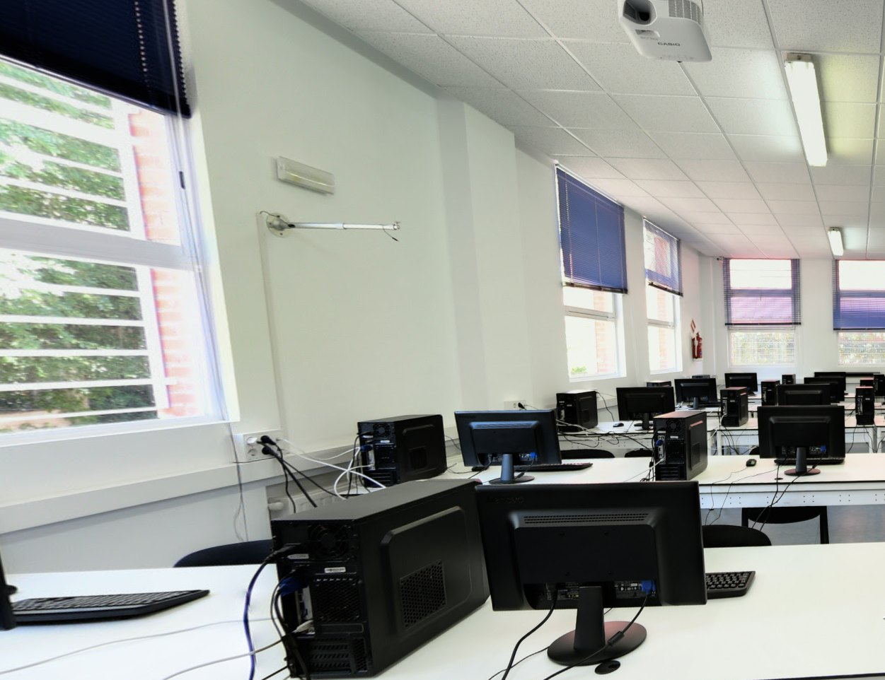

Se aprende practicando
Tiene 18 aulas de informática, un aula de redes y otra de montaje de equipos. Aquí casi todo se aprende haciendo.
Modo carrera: 2º de DAW
Estudio 2º de Desarrollo de Aplicaciones Web (DAW) en el IES Tetuán de las Victorias. Llegué en 2022 para hacer el Grado Medio de SMR y aquí sigo. En esta web te cuento cómo es el centro y lo que he aprendido en él.
Lo cuento como un modo carrera: cada curso es un nivel superado. Así he llegado hasta aquí.
Nivel 1
2022
Llegué al Tetuán para estudiar Sistemas Microinformáticos y Redes: montaje de equipos, redes y sistemas operativos.
Nivel 2
2025
Empecé el Grado Superior: Java, bases de datos, HTML, CSS y JavaScript. Aprobé todos los módulos del primer curso.
Nivel 3 Estás aquí
2026
Diseño de interfaces, servidor y despliegue. Esta web es uno de los proyectos de este curso.
Nivel 4
2027
Mis prácticas. He pedido el Erasmus+ del centro para hacerlas en Alemania.
Es un mando de videojuego con una W en el centro. Lo he diseñado yo y aparece en la pestaña del navegador en las tres páginas. Estas son las razones por las que me representa:
Es mi inicial. La he dibujado con trazos en zigzag que recuerdan a los símbolos < > del código.
Son mi gran afición: eFootball, Valorant o NBA 2K. Por eso cuento mi paso por el instituto como un "modo carrera".
Como desarrollador quiero crear interfaces fáciles de usar, que se manejen tan bien como un buen mando.
Azul cobalto de fondo y botones naranjas: el favicono y la web comparten identidad visual.

180 px (móvil)Tres cosas que más valoro del Tetuán después de estos años:
Tiene 18 aulas de informática, un aula de redes y otra de montaje de equipos. Aquí casi todo se aprende haciendo.
Erasmus+, AWS Academy, Cisco Networking Academy y empresas que colaboran con el centro para las prácticas.
Abrió en 1933 y, según su propia historia, es el centro de FP en activo más antiguo de España.

Su historia, lo que se puede estudiar, las instalaciones y cómo llegar.
Ver el centro
Los módulos que he cursado, mis proyectos y lo que me llevo para trabajar.
Ver mis estudios